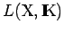
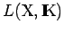

Inhalt Index DeskTop Bronstein

 Funktionalanalysis Stetige lineare Operatoren und Funktionale Stetige lineare Funktionale
Funktionalanalysis Stetige lineare Operatoren und Funktionale Stetige lineare Funktionale


Für  nennt man eine lineare Abbildung lineares Funktional oder Linearform. Im weiteren wird in einem HILBERT-Raum der komplexe, in allen anderen Situationen fast ausschließlich der reelle Fall betrachtet. Der BANACH-Raum  aller stetigen linearen Funktionale heißt Dual, Dualraum oder adjungierter Raum von
nennt man eine lineare Abbildung lineares Funktional oder Linearform. Im weiteren wird in einem HILBERT-Raum der komplexe, in allen anderen Situationen fast ausschließlich der reelle Fall betrachtet. Der BANACH-Raum  aller stetigen linearen Funktionale heißt Dual, Dualraum oder adjungierter Raum von  und wird mit (manchmal auch mit ) bezeichnet. Der Wert (aus
und wird mit (manchmal auch mit ) bezeichnet. Der Wert (aus  ) eines linearen stetigen Funktionals
) eines linearen stetigen Funktionals  auf einem Element
auf einem Element  wird mit
wird mit  , häufig aber auch - um den für die Dualitätstheorie ausschlaggebenden Gedanken der bilinearen Verknüpfung von
, häufig aber auch - um den für die Dualitätstheorie ausschlaggebenden Gedanken der bilinearen Verknüpfung von  und hervorzuheben - mit (x,f) bezeichnet (s. auch Satz von RIESZ über die linearen stetigen Funktionale im HILBERT-Raum).
und hervorzuheben - mit (x,f) bezeichnet (s. auch Satz von RIESZ über die linearen stetigen Funktionale im HILBERT-Raum).
| Beispiel A |
|
Seien fixierte Punkte des Intervals [a,b] und ist ein lineares stetiges Funktional auf dem Raum |
| Beispiel B |
|
Mit einer auf [a,b] summierbaren Funktion ist ein lineares stetiges Funktional auf |